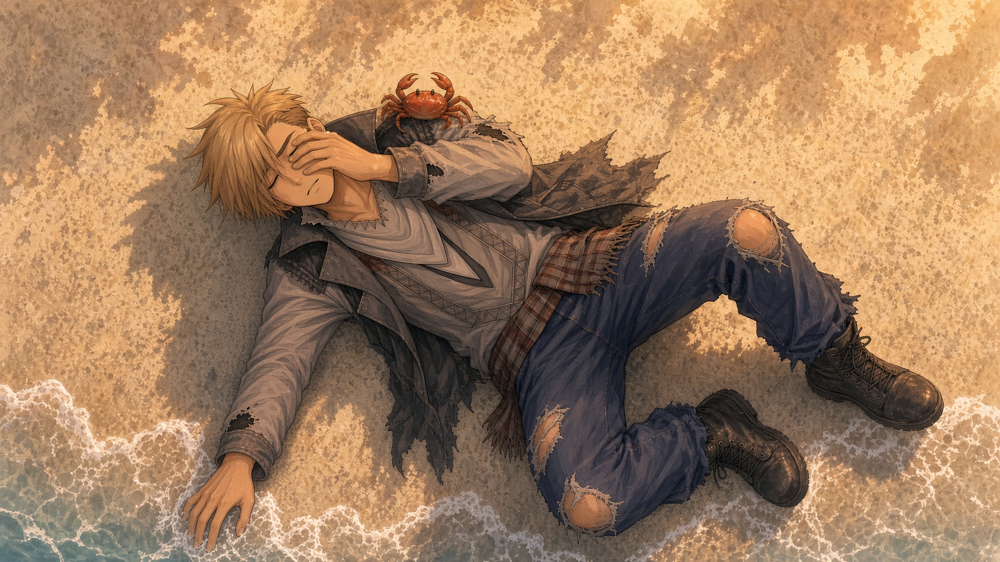

Nikko had slept too long. The sun was already up when he opened his eyes, the light low and orange across the water. The sand under his cheek was warm and high above him, a gull screamed incoherent about gull things.
He sat up. His mouth tasted like salt and pennies. Had he bitten his tongue last night? He scratched his head and sand fell out of his blond hair as it in turn fell into his eyes. The sand was everywhere. He adjusted his light frilly scarves and jacket, knocked sand out of his pant legs. He spent a long moment trying to fish one determined grain out of his ear canal.
Okay, he thought, okay. I remember this.
There had been a bus. He remembered that. A bus, or something like it. A long ride with Mom. She kept squeezing his knee. He remembered the new apartment, on the third floor and he could already find it in his head, mostly. It had a crooked number on the door and a window that looked out at the ocean. He remembered carrying boxes up the stairs, he and his Mom laughing at how heavy the books were. She had said they should have left the books behind.
“Never,” he recalled saying. And he remembered his mom had said never and they carried the books in.
Then he had gone out looking for the local kids, trying to find a spot to hang out, exploring the block. He’d walked a long way. Then he found a cat.
And that’s where his memory had gone soft.
The cat might have been gray. Maybe it was a bit orange and just looked gray in the streetlights. He had followed it down the endless empty streets and that hadn’t seemed strange at the time. He followed the cat because it seemed like the kind of cat that knew things. The sort of cat that looks over its shoulder to make sure you’re following.
Then he must have fallen asleep on the beach, which he knew was not wise, and had slept in till the sun was coming over the city and turning the world that warm and inviting orange and pink of sunrise instead of the almost hostile shade of sulfuric orange he had walked through all night. He must have. It was the only reasonable way to explain his present circumstance.
He frowned at the water, watching it lap up onto the beach a few feet away. Something about the memories itch as bad as the sand down his back. He couldn’t really recall the shape and color of that cat. Nor his mother’s face, not really. He knew her, knew what she looked like, the shape and odd individual details like her blue eyes or blond hair, but he couldn’t recall them all together. When he tried to concentrate, the image would slide sideways out of thought, out of detail, like a photograph left out in the sunlight for too long.
Beach sleep, he decided, was not as much fun as he had thought it would be. Everything in his head felt fuzzy. He would just hop up, get home, drink a lot of water and take a shower. Then he would be sharp again.
He stood up and brushed more sand off of himself. He had just barely registered that there were other people on the beach a little ways off when the crab got him.
It wasn’t a large crab, just a little orange thing the size of a hockey puck. It had been investigating him while he laid there on the sand and had hitched a ride on his shoulder without him noticing when he stood up. It pinched his earlobe.
Nikko squawked and shouted and yanked the offending arthropod from his ear. It was just as surprised at this reaction as Nikko and was quite indignant at being launched into the ocean. Nikko never realized that because he was too embarrassed.
The little group of people turned out to be a group of teenagers, close to his own age and they were laughing. It wasn’t cruel laughter, but was clear and loud and very much pointed at him.
“Was that a crab!?” one of them called out.
“My ear,” Nikko said, “It got me on the ear!”
That made it worse. One of the girls, the one with the shorts, fell onto the sand holding her stomach and rolling. A guy with large holes put in his ears leaned down to make sure she was okay. They seemed like people, but maybe not the kind of people Nikko wanted to be friends with.
Then he really noticed one of them: a girl wearing a massive, oversized orange jacket over her shoulders like it was a cape, like she was cold on a warm summer day. She put her hand over her mouth and her blue eyes crinkled. She brushed golden hair out of her face. Nikko felt his face burning.
Then the tall boy came over. He was the tall one because he stood a head higher than any of the others, and because he was darker than any of the others. His hair was black, just black, even where the sun reflected. He was dressed all in charcoal, and grey, and dark red. His arms swung easily with confidence as he approached, like this beach was his beach, the king of all beaches, and Nikko saw that he had the kind of muscle that takes earning. He stopped in front of Nikko, just close enough to be uncomfortable and stared down at him. There didn’t seem to be any threat, no cruelty incoming. Nikko stared back up.
“Wow. You are tall.”
He must have gotten that a lot. He ignored it. “You okay?”
Nikko scratched the back of his neck. “I’ll get over it.”
“I’m Wren.”
“Nikko.”
“Nikko,” Wren said, rolling it around like a new drink. “You’re new in town?”
“I guess it’s pretty obvious.”
“Falling asleep on the beach without a tent is the sort of mistake you only make once or twice,” Wren replied. He did not say it like he had ever made that mistake, but had observed it from time immemorial. Nikko found himself liking this kid. He couldn’t have been more than a year or two older than him, but he felt like an adult. Teenagers are naturally drawn to anyone who feels like what they would like maturity to look like.
The pretty blonde in the orange jacket stepped out from behind Wren. She looked like a very small, fluffy, bright songbird next to tall, dark, and handsome. She had an odd expression, something like worry, her little freckled nose wrinkled up in concentration. Her mouth started to form one question, then changed before the sound came out.
“I’m Momo,” she said, “Are you sure you’re okay. You’ve got sand all over your face.”
Nikko brushed more sand off. Then he stopped and sighed. “I’m never getting this sand off till I wash my clothes am I?”
Wren chuckled. “That’s the first reason people don’t tend to sleep on the beach more than once. How did you end up out here?”
“I was looking for— well I just moved here. Yesterday. My mom and I. I was trying to figure out where to hang out. And I met this cat and then…” Nikko gestured vaguely at the beach surrounding them, and the bizarre world in general. “Here.”
Wren stared at Nikko flatly. Momo looked like she was trapped between serious concern and staring at a large stuffed animal. Wren said, “You followed a cat.”
“It seemed like a smart cat.”
Wren looked at Momo, and Momo back to Wren. Something passed between the two of them, a small private verdict. Wren looked back at Nikko, his expression softened into friendly pity. He slapped Nikko on the shoulder.
“You are coming with us,” he declared. “I’m gonna show you around Shin-Seibu.”
And that’s how it began.
The first real look Nikko got of the city was from the boardwalk. In his opinion, it would always be the best view. Even later when he had climbed some of the high rises and could see all the way to the edge of the valley and the green mountains and the ocean all the way to the endless horizon, the boardwalk was the place to really see what Shin-Seibu was.
The city rose out of the coast in layers, white and cream and pale pink, crowded close together like all beach towns, and behind that, the downtown. Glass. Neon. Dark shapes grown out of the earth by technology and skill Nikko didn’t even know how to learn how to learn. Palm trees were everywhere. Murals were everywhere. People were everywhere. And those people, Nikko would continuously notice, were either extremely good-looking or obviously tourists. Most everyone on the boardwalk looked like they wandered off a magazine cover and decided to stay.
“It’s a lot,” said Momo at his elbow. She was still looking at him with an odd expression, but she seemed more comfortable now.
“It’s a lot,” Nikko agreed. Momo had a gift for understatement, he thought.
“You get used to it,” she said, turning away again and resting her chin on her arms, leaning on the wooden railing.
Nikko leaned against the rough grain of the wood too. I don’t think I will get used to it, he thought. How could anyone get used to this much?
Wren was walking ahead and had paused a moment to wave the two of them back to the group. Nikko and Momo trotted to catch up and settled into the crowd naturally taking up positions without negotiation. Nikko trailed the end, constantly distracted. Momo floated from Wren’s side back to Nikko to bring him along.
The rest of the group simply arranged itself around Wren and followed him like water looking for low ground. There was a kid with neon green wheels on his skateboard and way too many necklaces and bracelets. One girl with silver nail polish kept flipping her skateboard up into her hand and catching it without looking. A boy in a black and red beanie had a skateboard so covered in stickers, Nikko couldn’t see the deck, and any time Nikko was near him, he talked about the next set of stickers that were still in the mail. Momo tried to tell him their names, but the names wouldn’t stick in his brain, and after a few tries, Nikko decided it didn’t really matter yet. He was walking with a crew and no one had asked him to leave. That was enough for now.
At the end of their journey, Wren walked the group into the skate park, an abstract sculpture carved out of the ground with curves and rails and all manner of hard surfaces shaped oddly for teenagers to test their courage against. It was full of kids and noise, the dry clatter of wheels, cheers and shouting, people chatting off to the side and eating burgers or slices of pizza with cheese so thick it stretched like loose ship’s rigging and dripped orange grease on shirts.
Wren walked up to the edge, one of Nikko’s new friends (Jeff? Maybe it was Jake.) handed Wren a black and purple skateboard. Wren dropped in without a word and the other skaters made room for him without complaint or hesitation. A small leap up the other side. A grind on a rail into some kind of complex looking board flip. Nikko understood immediately that Wren was without a doubt the most skilled athlete in the park. He surfed the concrete like he had been born with a board attached to his feet.
Momo sat on the edge of the main bowl, feet hanging over and kicking gently. After a few minutes watching Wren shred the concrete, Nikko sat down next to her.
“Does he do that a lot?” Nikko asked.
“Every day,” she said. “He’s very good.”
“Someone should tell him that.”
“They do.” She smiled, just a little, her cheek freckles shifting as she smiled. “Don’t worry. He’s not as bad as he seems. He’s way worse.”
Nikko snorted. Then he laughed, and it surprised him. Momo didn’t look so surprised and turned her small, carefully contained smile towards Wren. For a while, they both sat there, just watching Wren fly up out of the bowl and hang at the top of the air like he had a deal with gravity before spinning back to face death by concrete with a confident grin. Nikko had a thought and turned to look at Momo. Then he stopped and stared at her for a long moment. The sun had climbed to full strength, and there was something about her in that light, the gold of her hair shining, the blue of her eyes moving over the crowd.
Then Wren was suddenly standing over him.
“C’mon, dude, you’ve been watching long enough. You should have the basic idea by now.” Wren was pulling Nikko up and handing him a board and telling him lots of things about stance and physics and balance that Nikko would never be able to remember. Then there was the stomach churning moment of standing on the edge of the bowl with Wren saying vaguely encouraging things behind him. Nikko took a deep breath and let gravity take him. He tried his best, really.
Then he found himself staring up at the sky again, this time covered in pain instead of sand. It happened more than once after that too, but each time, Wren and another teen would scoop him up, dust him off, offer him some unhealthily bright ice slurp or triple extra cheese pizza and put him back on the edge of the bowl until he started to get it.
“You know what I noticed,” Nikko said, later, when the afternoon had gone gold and the boardwalk lights started to come on, one by one, like a phantom lamplighter was walking its route.
“What?”
“Everybody here is doing something,” he said. “Everybody’s got a thing. A board, a crew, a place. Nobody’s just.” He waved a hand. “Standing around pretending.”
Momo examined all that his gesture indicated, the park, the city, the boardwalk, the universe at large, perhaps, and seemed to consider this very seriously. She took a small bite of nacho-covered french fry and chewed it pensively.
“Everybody’s pretending a little,” she said, finally, very quietly, almost to herself.
But then Wren was calling them, and the moment was already gone. Nikko didn’t hear her, not really. He was already up and moving and grinning, halfway to belonging before she had finished thinking.
The sun went down over Shin-Seibu as Nikko walked home from the boardwalk and the skatepark guided back to his neighborhood by Wren and the rest. He was carrying his new board, a gift from his new friends. It had bright green wheels and a dark sinister design on the deck that was already covered by a sticker of some clothes brand he’d never heard of. He was still near the beach and the sea was still; the sky met it and he couldn’t tell which was which as the sun slipped between them. The first star of the evening sparked out in the orange and purple and pink.
Nikko had never stopped to look at a star in his short life, but this one seemed important. He stopped and he looked at it. At his ankle, he felt something warm and purring, and without thinking, he knelt down and petted the cat that had adopted his leg for a moment. He didn’t know why that star seemed so important.
He didn’t know that on this beach, not long ago, someone wished on a star just like that one, a star washed up on the beach. Nikko just thought it was very pretty, and felt very meaningful, like a dream.
Then Wren was calling his name, telling him to hurry up, and he ran.